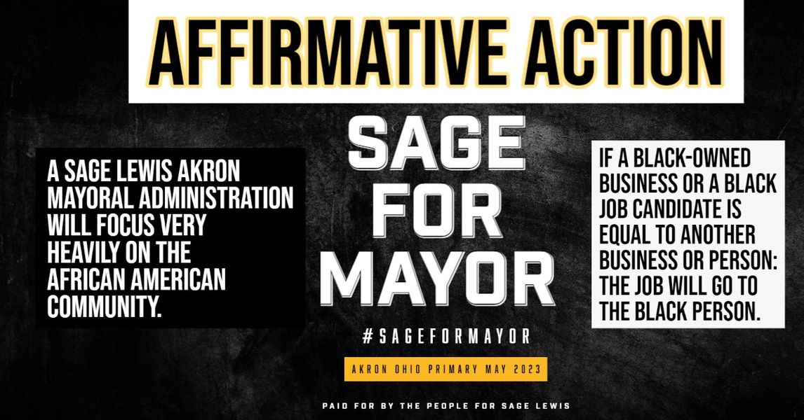

Timeline photos
The systemic, flagrant, crushing racism SPECIFICALLY against Black people in Akron Ohio is baked into our very DNA. We've been racist since the beginning. Because of that, we have a HUGE amount of unwinding and healing to do to help our Black Akron neighbors even begin to start in a place of equality with everyone else. This existential damage will not be undone by a few platitudes and holidays. WE HAVE SERIOUS WORK TO DO.
In my administration, if a Black owned business or a Black job candidate is as good as another candidate THE BLACK CANDIDATE WILL GET THE JOB.
#sageformayor